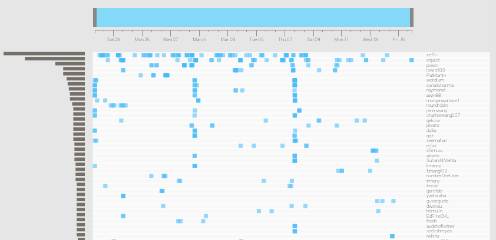
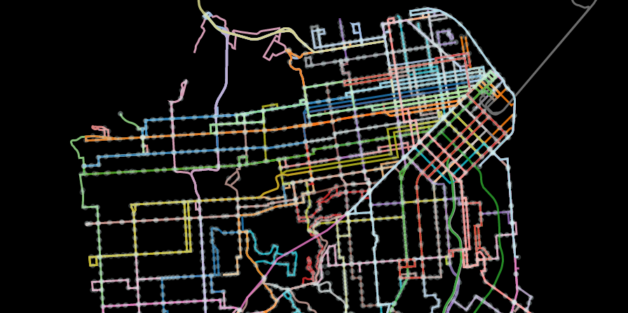
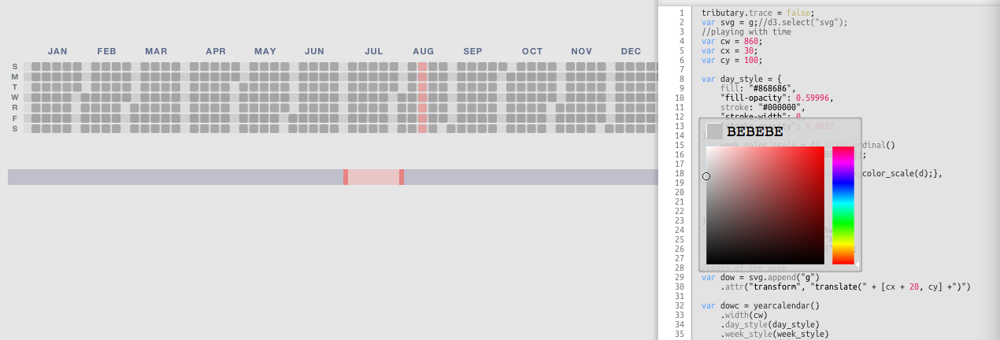
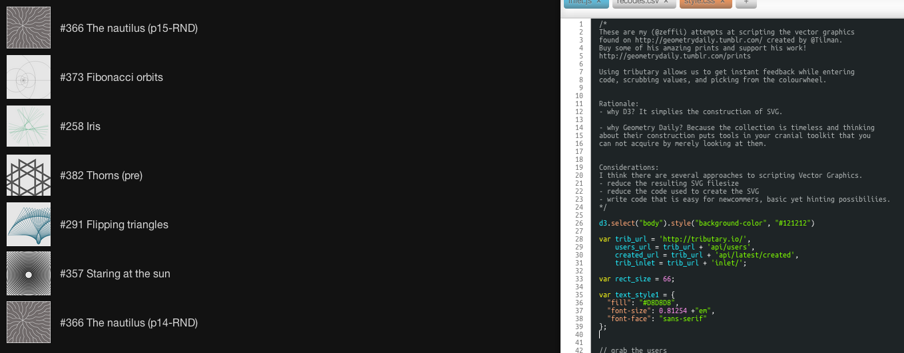
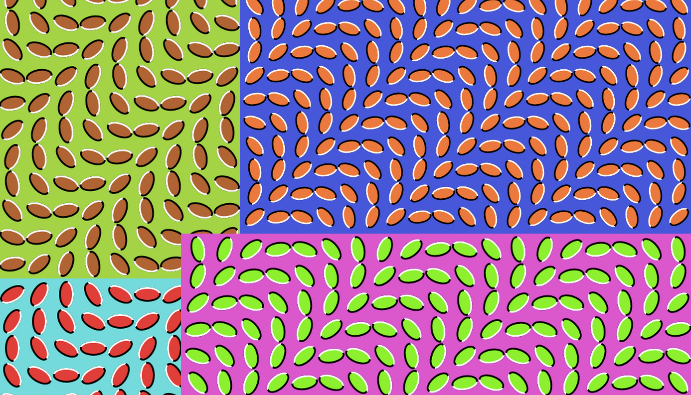

Ideas flow from a creator’s mind into their medium. Far too often those ideas never materialize because of the friction they face in the gateway to reality. 
In early 2012, EJ and I watched Bret Victor’s Inventing on Principle talk, and were awakened to the possibility of making tools that bridge the gap between mind and materializing. When we came upon Gabriel Florit’s initial implementation of his water project (what is now livecoding.io) we realized we could be working on this. Thus Tributary was born.
Designers and programmers often speak different languages, and while they are trying to build the same thing they are primarily concerned with solving different aspects of the same problem. 
In order to stay on the same page EJ and I wanted a way to incrementally build on each other’s work. While we worked together, ideas and possibilities were in no short supply, the trick was enabling each other to implement them. We wanted a fast way to pass a single piece back and forth until it reflected what we wanted to see.
EJ and I were working together to create data visualizations with d3.js. D3 ties together many modern web standards, which is both powerful and hard to learn.
We wanted a way to explore all of these new standards and try out their myriad features. Furthermore, EJ had stronger experience as a visual designer and I had stronger experience as a programmer so we were learning different areas of this brave new world.
@enjalot uses tributary to live code d3 tutorial videos dot enter dot append
He also uses it to prototype visualizations and app components for Lever http://tributary.io/inlet/3791303 
@zeffii http://tributary.io/inlet/5073832
@seliopou http://tributary.io/inlet/4981624
@tmcw http://bl.ocks.org/tmcw/4949603
@enjalot http://tributary.io/inlet/4998357
@zeffii ended up winning 
http://tributary.io/inlet/5174963
optical illusions 